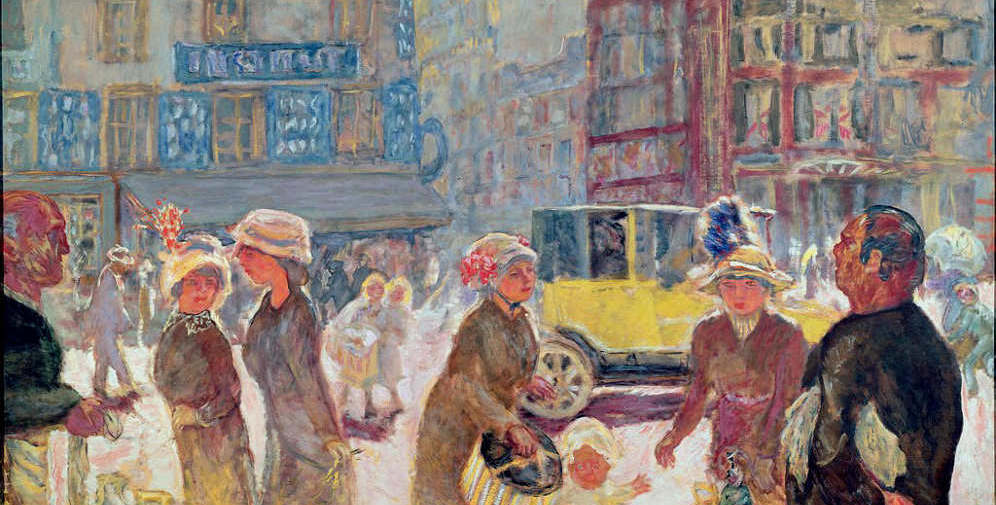
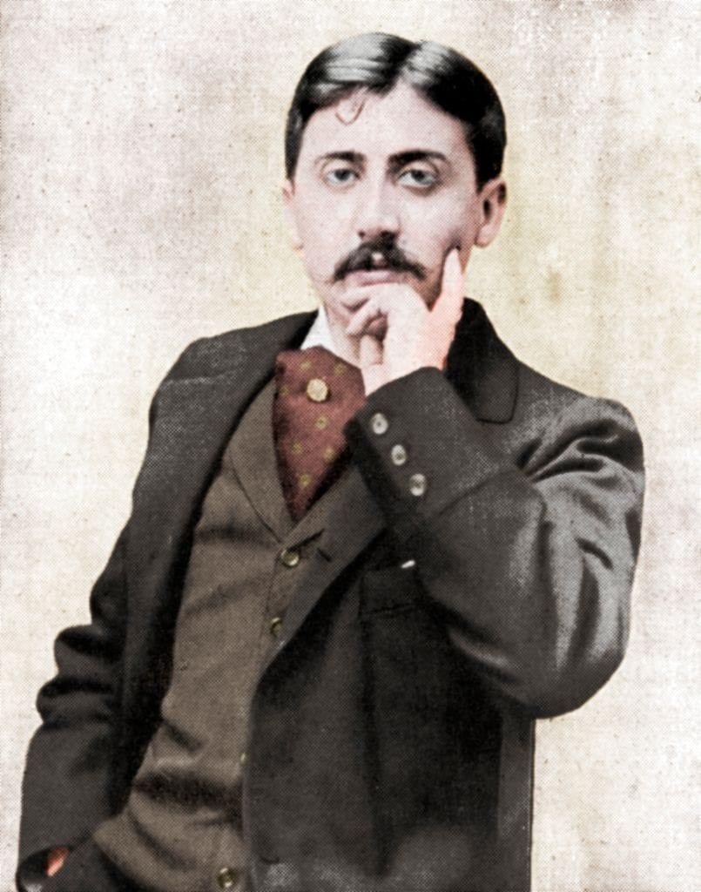
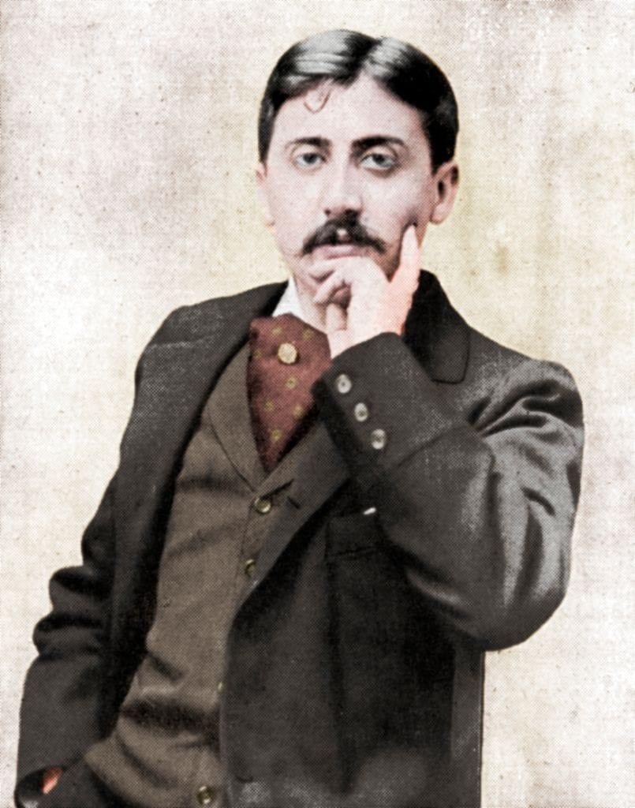

France has been an influential cultural force for centuries. From the Middle Ages to modern times, French artists, philosophers, and writers have shaped global thought and creativity. French culture is known for its achievements in the arts, literature, and cuisine.

 
